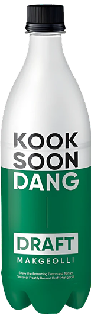
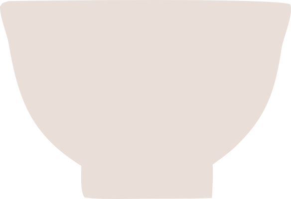
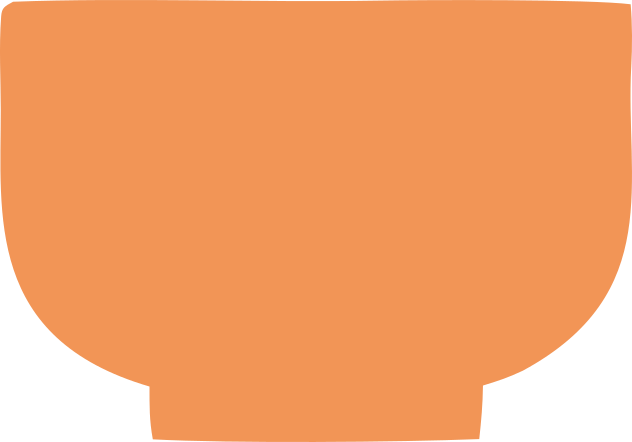
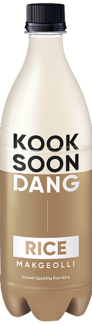
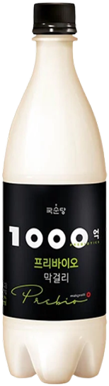
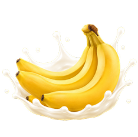
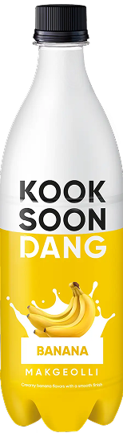
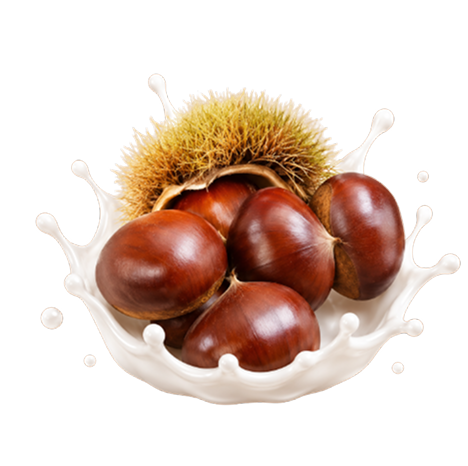
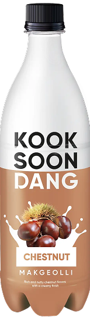

DRAFT MAKGEOLLI
#FRESH #LIVELY #VEGAN
Popular search terms

Our makgeolli is a traditional Korean rice wine, brewed with nuruk for a soft, naturally sweet taste.

Makgeolli is Korea's traditional rice wine. We brew ours with nuruk, a natural fermentation starter, for a rich and nutty depth.

Our fresh, unpasteurized makgeolli carries live yeast in every bottle. The yeast keeps fermenting gently, creating a light, natural fizz. Each sip feels lively, with a bright and refreshing tang.
Milky white and silky smooth, our makgeolli gets its soft, natural sweetness from slowly fermented rice. It's sweet without ever feeling heavy. The finish is clean, with a light hint of rice that lingers.

#FRESH #LIVELY #VEGAN

#SMOOTH #AUTHENTIC #VEGAN

#RICE #NURUK #VEGAN


#SOFT #CREAMY


#RICH #NUTTY